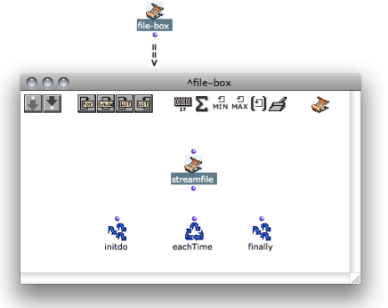
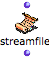
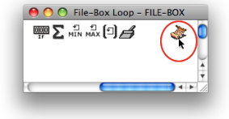
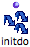

OpenMusic DocumentationHiérarchie de section : OM 6.6 User Manual > Visual Programming II > Files > File-Box > Introduction
OpenMusic DocumentationHiérarchie de section : OM 6.6 User Manual > Visual Programming II > Files > File-Box > Introduction
Navigation : page précédente | page suivante
Attention, votre navigateur ne supporte pas le javascript ou celui-ci à été désactivé. Certaines fonctionnalités de ce guide sont restreintes.
Introduction to the File-Box
Programming with the File-Box takes place in an internal editor, which resembles the OMLoop editor. Like OMLoop, File-Box can only be evaluated from outside the editor, in its container patch.

Iterations : OMLoop
StreamFile : a Pointer to Read and Write Files in File-Box
This editor has one main additional feature : the StreamFile **** box.
Features
StreamFile is an indispensable element for the File-Box : it is required to read from a file, or write to a file.
 |
The StreamFile box represents a file pointer , that is :
|
Use
|

|
Reading and Writing Files in File-Box : Functions of the "Files" Package
A number of functions of the package are used for writing or reading files in the Text-Box.
Access
To access these functions, go to Functions / Kernel / Files.
Features
|
The file-write function writes something (its input) in a file. |
|
The file-read-line function reads one line in a file. |
|
The file-write-line function writes a line (that is, its input and a line break) a file. |
|
The file-eof-p function tells if the end of file has been reached. |
Using Connate Functions
Inito
|  | The Initdo module performs an action before the iteration starts. It is a useful tool to read or write file headers. |
Using Initdo in Iterative Processes
Références :
Plan :
Navigation : page précédente | page suivante
A propos...(c) Ircam - Centre Pompidou